设备管理
I/O硬件
总线
这是在对总线的抽象,CPU,Memory,I/O部件挂载在总线上,通过总线交流
地址总线传递地址，数据总线传递数据，控制总线传递控制信号。
以CPU读入数据为例,CPU发出请求,address bus传递地址,读到的数据通过data bus传递给CPU。
I/O系统
这是对I/O的抽象,可见I/O被拆分开,channel processor可以看成分发器,System Bus传来的请求在这里处理,然后发送信号到I/O bus,控制不同的I/O设备.I/O Bus连接了不同的I/O设备,不同I/O设备的传输数量差了很多倍数量级,键盘打字的速度再快也比不上硬盘的读入,因此,需要对不同设备分别管理.
I/O设备与管理
分类
按照类型分类:
- 传输速度不同:低俗设备,中速设备,高速设备
- 数据组织不同:
- 块设备:以数据块为单位存储、传输信息。传输速率较高、可寻址(随机读写)
- 字符设备:以字符为单位存储、传输信息。传输速率低、不可寻址。
- 共享属性不同:
- 独占设备:一次只能由一个进程访问,比如打印机
- 共享设备:可以多个进程访问的设备
- 虚拟设备:在一类设备上模拟另一类设备，常用的方法是，用共享设备模拟独占设备，用高速设备模拟低速设备。
设备管理
目标:
- 按照请求,操作设备,完成数据交换,最终完成用户请求
- 建立方便,统一的独立于设备的接口(抽象)
- 充分利用技术,提高CPU与设备,设备与设备之间的并行工作能力,提高利用率
- 保护信息
设备控制器
功能
- 接收和识别CPU给来的命令
- 数据交换：CPU与控制器、控制器与设备
- 设备状态的了解和报告
- 设备地址识别
- 缓冲区
- 对设备传来的数据进行差错检测
组成
- 控制器与
CPU的接口: 数据寄存器,控制寄存器,状态寄存器,采用内存映射或专门的I/O指令 - 控制器与设备的接口: 数据信号,控制信号,状态信号
I/O逻辑: 用于实现CPU对I/O设备控制
I/O端口地址
I/O端口地址指的是接口电路中每个寄存器具有唯一的地址
每个设备的I/O端口地址形成I/O地址空间,由OS保护
I/O指令形式和I/O地址相关联,分类如下:
- 内存映像编址(内存映像
I/O模式):- 控制器的寄存器作为物理空间的一部分,可以直接通过地址访问
I/O独立编址(I/O专用指令):- 由专门的指令访问
I/O端口,就像CP0中的寄存器通过mfc0,mtc0访问类似,add等指令无法访问CP0寄存器,intel架构中有in/out指令
- 由专门的指令访问
内存映像I/O模式特点:
优点:
- 不需要特殊的保护机制来组织用于进程访问,只需要当成内核地址一样即可.
- 不需要额外指令集,减轻编程负担
缺点:
优点:
- 外设不占用地址空间
- 编程时易区分是对内存操作还是
I/O操作
缺点:
I/O指令少,操作不灵活
I/O控制方式
- 程序控制
I/O:也称轮询或者查询方式I/O. - 中断驱动:当
I/O操作结束后由设备控制器主动来通知驱动程序说这次结束. DMA(Direct Memory Access):直接存储器访问方式,由一个专门的控制器完成数据到内存和设备或者是从设备到内存的传输工作- 通道:与
DMA很类似,但是DMA依然离不开CPU,需要CPU的控制信号,通道则更加独立.它有自己的指令和程序专门负责数据输入输出的传输控制.CPU将“传输控制”的功能下放给通道后只负责“数据处理”功能.这样,通道与CPU分时使用内存，实现了CPU内部运算与I/O设备的并行工作.程序控制
I/O
中断驱动

DMA
- 命令/状态寄存器(
CR):用于接受从CPU发送来的I/O命令,或有关控制信息,或设备状态. - 内存地址寄存器(
MAR):在输入时,它存放把数据从设备传送到内存的起始目标地址,在输出的时候,它存方由内存到设备的内存源地址. - 数据寄存器(
DR):用于暂存从设备到内存,或从内存到设备的数据. - 数据计数器(
DC):存放本次CPU要读或写的字节数. - 优点:
CPU只需要干预I/O操作的开始和结束,后续数据读写无需CPU控制
- 缺点:
基本思想:
进一步减少CPU的干预.
I/O通道有自己的处理器和指令体系,独立于CPU,可进行更复杂的I/O控制.通道程序通常由操作系统构造,放在内存.
- 优点:
- 执行一个通道程序可以完成机组I/O操作,减少
CPU干预.
- 执行一个通道程序可以完成机组I/O操作,减少
- 缺点:
- 费用高
I/O通道分类
- 字节多路通道
- 以字节为单位交叉工作:当为一台设备传送一个字节后,立即转去为另一台设备传送一个字节,是用于低速或中速
I/O设备.
- 以字节为单位交叉工作:当为一台设备传送一个字节后,立即转去为另一台设备传送一个字节,是用于低速或中速
- 选择通道
- 以组方式工作:每次传送一批数据,传送速率很高,但一段时间只能为一个设备服务.当当前
I/O请求处理完之后,就选择另一台设备服务,适用于高速设备.
- 以组方式工作:每次传送一批数据,传送速率很高,但一段时间只能为一个设备服务.当当前
- 数组多路通道
- 综合字节多路通道分时工作和选择通道传输速率高的特点,实质是:对通道程序采用多道程序设计技术,使得与通道连接而设备可以并行工作.
DMA与通道区别
- 通道更加独立,
DMA数据传输方向,地址,大小还脱离不了CPU,通道则有自己的指令体系,执行通道程序就能实现对数据传输控制. - DMA通常只能控制一台或者少数几台同类设备,而一个通道可以同时控制多种设备
I/O软件

设备独立性
类似于逻辑地址和物理地址的结构,对于设备而言也有逻辑设备和物理设备.应用程序访问的是逻辑设备,经过逻辑设备表转换为物理设备.这样的好处是:
- 设备分配的灵活性:当计算机连接多台相同设备的时候,如果进程直接访问物理设备,而该物理设备繁忙,那么就会阻塞.如果访问逻辑设备,则是请求的一类设备,由
OS完成分配. - 易于
I/O重定向,用于I/O操作的设备通过修改逻辑设备表即可实现更换,而不需要更换应用程序,同时也提升了程序的可移植性
逻辑设备表(LUT)
为了实现设备独立性,系统设置的一张由逻辑设备映射到物理设备的表,该表表项包含三项:逻辑设备名,物理设备名,驱动程序入口地址.
LUT的设置课采用两种方式:
- 整个系统设置一张
LUT:该表中不能出现重复的逻辑设备名,因此用户不能使用相同的逻辑设备名(保证用户的独立性) - 每个用户一张
LUT:每个用户登录时,便为该用户建立一个进程,同时设置一张LUT放入进程的PCB中.
设备驱动程序
与设备密切相关的代码放在设备驱动程序中,每个设备驱动程序处理一种设备类型.
设备驱动程序的任务时接受来自于设备无关的上层软件的抽象请求,并执行请求.
每一个控制器都设有一个或多个设备寄存器,用于存放向设备发送的命令和参数,设备驱动程序负责释放这些命令,监督正确执行.
它是I/O设备和设备控制器之间的通信程序
驱动程序与I/O设备的特性,控制方式,硬件密切相关,特殊优化.
设备驱动程序的组成
- 自动配置和初始化子程序:检测对应的硬件设备是否存在且正常,并完成对该设备及其相关设备驱动程序所需要的软件状态的初始化.在初始化时被调用一次
- I/O操作子程序:调用该子程序是系统调用的结果,执行该部分程序时仍属于调用它的进程,只是进入了核心态.
- 中断服务子程序:系统来接受系统中断,再有系统调用中断服务子程序.因为设备驱动程序一般支持同一类型的若干设备,所以一般在系统调用中断服务子程序的时候,都带有一个或多个参数,以标识请求服务的设备.
设备驱动属于内核
前面提到,设备驱动是系统调用的结果,因此,设备驱动享有内核的一切服务和责任,包括:
- 设备驱动时内核的一部分,出错将导致系统的严重错误
- 设备驱动必须为内核提供一个标准接口
- 驱动程序初始化函数
- 驱动卸载函数,申请设备函数,释放设备函数
I/O操作函数- 中断处理函数
- 可以使用内核服务,如内存分配,中断发送,等待队列
- 动态可加载
I/O缓冲管理
缓冲技术可提高外设利用率
- 匹配
CPU和外设的不同处理速度 - 减少对
CPU的中断次数 - 提高
CPU和I/O设备之间的并行性
单缓冲(Single Buffer)
每当用户进程发出一个I/O请求时,操作系统便在主存之中分配一个缓冲区,因为CPU和I/O之间并行,因此数据处理时间为$Max(C,T)+M$
双缓冲(Double Buffer)
两个缓冲区,CPU和外设都可以连续处理而无需等待对方.要求CPU和外设的速度相近.在双缓冲时,系统处理一块数据的时间可以粗略认为是$Max(C+M,T)$,如果$C \lt T$,可使块设备连续输入,如果$C \gt T$,则可是CPU不必等待设备输入

环形缓冲(Circular Buffer)
针对CPU和外设处理速度差较大,引入环形缓冲,可将多个缓冲组织成循环缓冲形式.
组成:
- 多个缓冲区:在循环中有多个大小相同的缓冲区.缓冲区可分为三类:空缓冲区R,满缓冲区G,计算机进程正在使用的空缓冲区C.
- 多个指针:作为输入的缓冲区可设置三个指针,指示计算进程下一个可用缓冲区G的指针Nextg,指示输入进程下一个可用的空缓冲区R的指针Nexti,指示计算进程正在使用的缓冲区C的指针Current
缓冲池
当系统较大的时候,不可能给每一个进程开一个缓冲区,这会消耗大量内存,因此为了提高利用率,引入了缓冲池,池中设置了多个可供若干个进程共享的缓冲区.池内至少有下面三种缓冲区:
- 空闲缓冲区,其形成的队列叫做
emq - 装满输入数据的缓冲区,其形成的队列叫做
inq - 装满输出数据的缓冲区,其形成的队列叫做
outq

I/O设备管理
由于外设资源有限,需解决进程间的外设共享问题,以提高外设资源的利用率,有常见一下两种做法:
- 在进程间切换使用外设
- 通过一个虚拟设备把外设和应用进程隔开,只由虚拟设备来使用外设.
DCT(Device Control Table)设备控制表
每个设备一张,描述设备特性和状态.
- 类型
- 标识符
- 状态:表示设备使用状态
- 指向控制器表的指针:指向该设备所连接的控制器的控制表
- 重复执行次数或时间:发生传送错误时应重复执行的次数
- 设备队列的队首指针:指向申请本设备而没有满足的进程排成的表
COCT(Controller Control Table)控制器控制表
每个设备控制器一张,描述控制器的配置和状态
CHCT(Channel Control Table)通道控制表
每个通道一张,描述通道工作状态
SDT(System Device Table)系统设备表
反映系统中设备资源的状态,记录所有设备的状态及其设备控制表的入口
- DCT指针:指向相应设备的DCT
- 设备使用进程表示:正在使用该设备的进程标识
- DCT信息:为引用方便而保存的DCT信息,如设备标识,设备类型
设备分配考虑因素
- 设备固有属性
- 设备分配算法
- 设备分配中的安全性:死锁
- 安全分配(同步):进程分配之后进入阻塞,直到I/O完成,但是
CPU和I/O串行,效率低 - 不安全分配(异步):进程发出请求后,仍然继续运行,可申请其他设备,可能产生死锁,需进行检查,但是效率高.
- 安全分配(同步):进程分配之后进入阻塞,直到I/O完成,但是
单(多)通路I/O系统的设备分配
单(多)通路:一个设备对应一(多)个控制器,一个控制器对应一(多)个通道.
- 分配设备
- 根据物理设备名查找SDT,找到DCT,如果忙,则等待,否则计算是否产生死锁,进行分配
- 分配设备控制器
- 进程得到DCT之后,找到对应的COCT,如果空闲则分配,否则进入等待队列
- 分配通道
- 进程得到COCT之后,找到对应的CHCT,如果空闲则分配,否则进入等待队列
SPOOLing技术/假脱机技术
SPOOLing(Simultaneous Peripheral Operation On Line)也称为虚拟设备技术,可把独享设备转换成具有共享特征的虚拟设备,提高设备利用率
引入
在多道程序系统中,专门利用移到程序(SPOOLing程序)来完成对设备的I/O操作,无需使用外围I/O处理机
SPOOLing程序和外设进行数据交换:实际I/O:- 输入:程序预先从外设读入数据并且加以缓冲,在需要的时候输入到应用程序
- 输出:程序预先接受应用程序的输出数据加以缓冲,在适当时机输出到外设
SPOOLing程序和用户程序进行数据交换:虚拟I/O
系统组成
- 输入井和输出井:磁盘上开辟的两个大存储空间.输入井用于模拟脱机输入时的磁盘设备,暂存输入数据,输出井模拟脱机输出时的磁盘,用于暂存用户程序和输出数据.
- 输入缓冲区和输出缓冲区:由于
CPU和磁盘速度不匹配而在内存开辟的缓冲区,攒出数据 - 输入进程
SPi和输出进程SPo:利用两个进程模拟脱机I/O时的外围控制机.SPi将输入数据从输入机通过输入缓冲区输入输入金,需要的时候再从输入井读入内存,输出线程将要求输出的数据从内存读入输出井,空闲时将其传送到输出设备.

特点
- 告诉虚拟I/O操作:缓冲区提速
- 实现对独享设备的共享:设备繁忙时,先把数据放入输出井,对于进程来说已经完成了输出.
I/O性能问题
解决I/O性能的途径:
- 使
I/O尽可能独立于CPU:通过DMA,通道 - 使
CPU的速度尽可能不被I/O拉低:通过缓冲区
I/O操作过程
I/O操作可以分成两部分:
- 第一阶段:
- 磁盘吧数据装载进内核的内存空间
- 第二阶段:
- 内核的内存空间的数据
copy到用户的内存空间
- 内核的内存空间的数据
I/O操作总的步骤:
- 进程向内核发起系统调用
- 内核接搜到系统调用,将磁盘中文件读出来
- 磁盘将文件载入到内核的地址空间
- 内核的内存空间接收到之后,将其copy到用户进程的内存空间
- 进程内核内存空间接收到文件,向内核通知
- 内核唤醒进程
阻塞I/O
在最后一步之前,整个进程都会被挂起,待到唤醒之后才继续执行
多路复用I/O
工作进程调用一个管理I/O的特殊库函数,此库函数可以接受并管理多个I/O请求,工作进程则可以同时等待多个I/O请求.提高了效率.
第二阶段依然需要工作进程参与库函数,把内核空间数据复制到用户空间,第二阶段依然阻塞.
非阻塞I/O
进程发起I/O调用,I/O直到需要一段时间,让进程进行其他操作(忙等).
事件(信号)驱动I/O
进程发起调用,内核会记住那个进程申请的,一旦第一个阶段完成,内核向进程发起通知,进程第二段开始阻塞.因此,这样进程第一阶段既不阻塞,也不忙等.
异步I/O
无论第一第二段, 不再向系统调用提出任何反馈, 只有数据完全复制到服务进程内存中后, 才向服务进程返回ok的信息,其它时间,进程可以随意做自己的事情,直到内核通知ok信息。